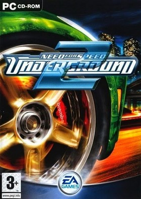
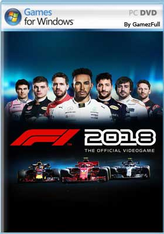
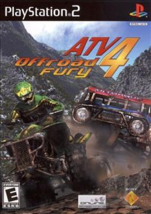

Need for Speed: Undergraound 2
Todo el juego tiene lugar después del anochecer. Durante la
exploración, los jugadores pueden encontrarse con otros
conductores, que sirven como fuente de información sobre los
eventos relacionados con los entusiastas de las carreras de
alta velocidad. Sin embargo, los jugadores también pueden
desafiar a esos conductores para las carreras que comienzan
en la intersección más cercana.

Formula 1
El Campeonato Mundial de Fórmula 1 anual embriaga a una
audiencia mundial de miles de millones, con su cóctel de
velocidad, emoción, glamour y rivalidad. EA SPORTS ™ F1 2002
da vida a este mundo en la experiencia de Fórmula Uno más
avanzada técnicamente y visualmente más impresionante de la
historia.

ATV 4
ATV Off Road Fury 4 ofrece una variedad de opciones de un
solo jugador y multijugador para carreras, vehículos,
jinetes y equipo con un total de 72 pistas para rasgar.
Comenzando con la acción de un solo jugador, el modo “Story”
comienza con la selección de un jinete y un vehículo.